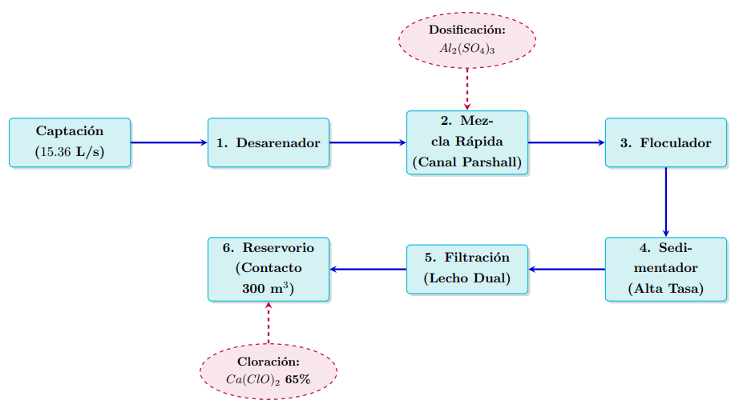
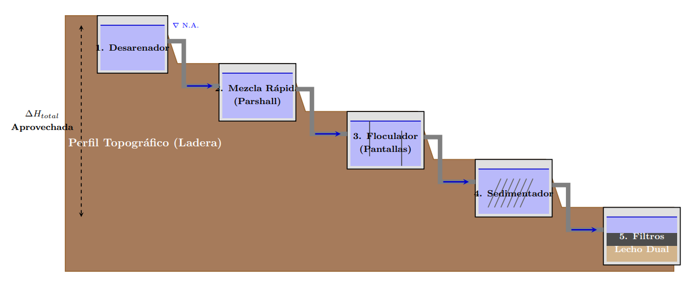
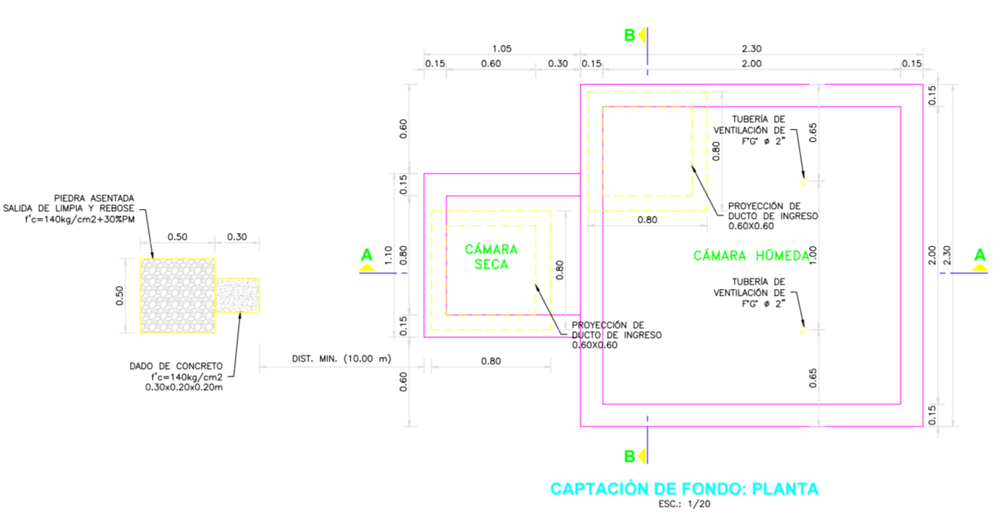
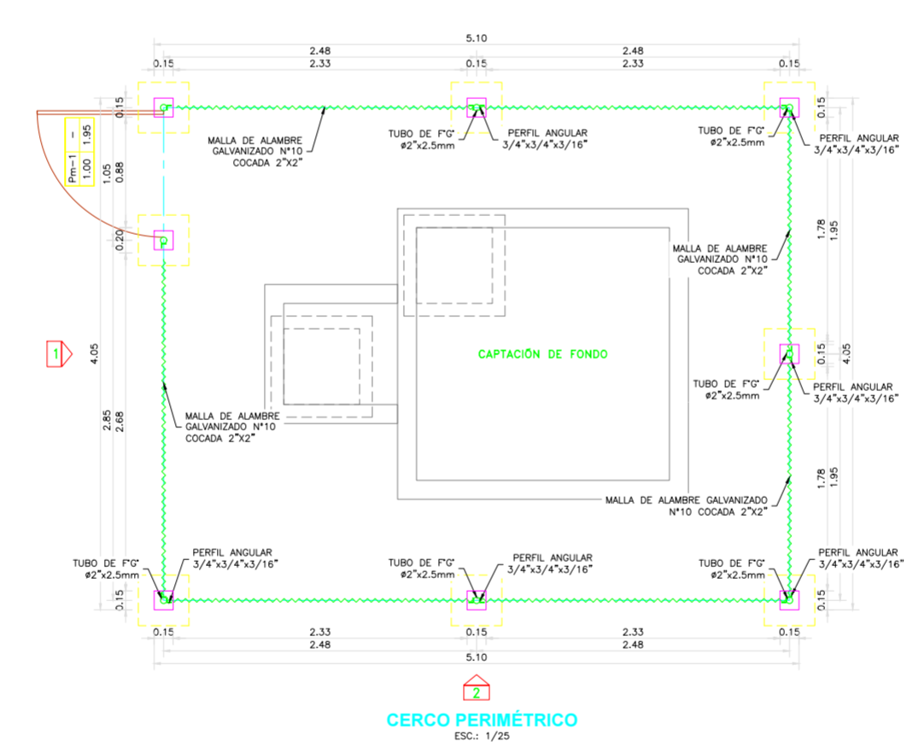

7. Diseño y Descripción de la Planta de Tratamiento de Agua Potable (PTAP - Las Peñas) y Captación de Manantial de Fondo (Chimbiles)#
7.1. Diseño de la PTAP (Las Peñas)#
7.1.1. Marco normativo y fundamentación tecnológica#
El diseño conceptual de la Planta de Tratamiento de Agua Potable (PTAP) a nivel de perfil responde a la necesidad de dotar a la población de un recurso hídrico seguro, continuo y que cumpla estrictamente con los Estándares de Calidad Ambiental (ECA) y el Reglamento de la Calidad del Agua para Consumo Humano (D.S. N.° 031-2010-SA). Las fuentes superficiales de régimen lótico, típicas de las cuencas andinas, presentan una vulnerabilidad hidroclimática extrema: durante las precipitaciones intensas, la escorrentía acarrea material particulado, limos, arcillas y materia orgánica, incrementando la turbidez por encima de las 50 UNT, acompañada de una elevada concentración de coliformes termotolerantes.
Bajo este escenario, metodologías simplificadas como la desinfección primaria o la filtración directa resultan inviables y representan un riesgo para la salud pública. En estricta sujeción a la Norma Técnica OS.020 del RNE (MVCS, 2006) y a los manuales de clarificación del CEPIS/OPS, se proyecta una Planta de Tratamiento Convencional de Filtración Rápida, barrera sanitaria multietapa compuesta secuencialmente por coagulación, floculación, sedimentación, filtración y desinfección química, que garantiza la remoción integral de partículas coloidales y la entrega de un efluente con turbidez controlada menor a 1.0 UNT.
7.1.2. Ecuaciones fundamentales y parámetros hidráulicos base#
El dimensionamiento del tren de tratamiento absorbe el escenario de mayor demanda, definido por el Caudal Máximo Diario (\(Q_{md}\)). Para el presente proyecto, el caudal de diseño de 15.36 L/s se homogeneizó a sus equivalentes volumétricos:
El predimensionamiento de las unidades obedece a las siguientes ecuaciones rectoras:
Tasa de aplicación superficial (\(V_a\)) — límite de decantación en el sedimentador:
Gradiente de velocidad (\(G\)) — intensidad de mezcla y disipación de energía, vital para coagulación y floculación:
Velocidad de sedimentación (\(v_s\)), Ley de Stokes — decantación de partículas discretas en el desarenado, en flujo laminar:
7.1.3. Esquemas explicativos del sistema de tratamiento#

Figura 7.1. Diagrama unifilar de procesos físico-químicos (elaboración propia). La secuencia detalla los puntos de dosificación química: sulfato de aluminio en la mezcla rápida e hipoclorito de calcio en el reservorio de contacto.

Figura 7.2. Perfil hidráulico de gravedad en ladera (elaboración propia). Al disponer las unidades en arreglo tipo "cascada" se aprovecha la energía potencial gravitatoria del relieve andino para conducir los 15.36 L/s y generar las pérdidas de carga necesarias para la floculación, anulando la dependencia de bombeo electromecánico inter-procesos.
7.1.4. Descripción física, química y operativa de las unidades#
El dimensionamiento de las estructuras considera un margen de seguridad por pérdidas de planta (agua de retrolavado y purgas) del 5 %. El tren de tratamiento se describe a continuación:
7.1.4.1. Desarenador de flujo horizontal#
Constituye el pretratamiento físico fundamental para proteger la infraestructura. Su objetivo es la decantación de partículas minerales discretas (diámetro \(\ge 0.2\) mm y gravedad específica \(\approx 2.65\)). El canal de transición expande el área transversal para reducir la velocidad horizontal de paso a \(v_h < 0.3\) m/s, asegurando que el esfuerzo cortante de arrastre en el fondo no resuspenda las arenas depositadas, protegiendo las obras posteriores de la abrasión y evitando el azolvamiento de los canales del floculador.
7.1.4.2. Mezcla rápida y coagulación (canal Parshall)#
Representa la etapa crítica de alteración química de la masa de agua. Se dosifica el coagulante metálico (sulfato de aluminio en solución) para desestabilizar la carga electronegativa que mantiene en repulsión a los coloides (turbidez). El canal Parshall fuerza un cambio de régimen subcrítico a supercrítico (número de Froude \(Fr > 1\)), induciendo un resalto hidráulico al pie de su garganta que disipa una alta cantidad de energía cinética, generando un gradiente de velocidad instantáneo \(G > 1000 \text{ s}^{-1}\) con un tiempo de mezcla inferior a 1 segundo, lo que asegura la dispersión homogénea del catión \(Al^{3+}\) antes de la polimerización.
7.1.4.3. Floculador hidráulico de pantallas#
Estructura de tabiquería de concreto con pantallas deflectoras dispuestas en serpentín. Opera bajo el principio de la floculación ortocinética: los gradientes de velocidad inducidos por las pérdidas de carga en los giros provocan múltiples colisiones entre las partículas desestabilizadas, permitiendo que se aglomeren en flóculos visibles y pesados. El predimensionamiento incluye un tiempo de retención (\(t_r\)) de 30 minutos y un gradiente de velocidad escalonado decreciente (p. ej., \(70 \rightarrow 40 \rightarrow 20 \text{ s}^{-1}\)). Esta disminución progresiva de la turbulencia evita la ruptura física del flóculo por cizallamiento conforme gana masa, tamaño y fragilidad.
7.1.4.4. Sedimentador de alta tasa (módulos de placas)#
Corazón del proceso de clarificación. Consiste en un tanque rectangular equipado con módulos internos de perfiles de ABS o plástico reforzado inclinados a \(60^\circ\) respecto a la horizontal. Operando según la teoría del efecto Boycott, las placas disminuyen drásticamente la distancia de sedimentación: el caudal asciende en régimen laminar estricto (número de Reynolds \(Re < 500\)) mientras los flóculos resbalan contra la pendiente de las placas y caen hacia la tolva de lodos. Gracias a esta tecnología, el área superficial requerida (\(A_s\)) se reduce considerablemente frente a un decantador convencional, operando con una tasa superficial de \(120 \text{ m}^3/\text{m}^2/\text{día}\).
7.1.4.5. Filtración rápida de lecho dual#
Batería de dos (02) unidades en paralelo con flujo descendente. El manto filtrante posee configuración mixta: una capa superior de antracita (baja densidad, granulometría gruesa) y una capa inferior de arena sílica (alta densidad, granulometría fina). Este diseño propicia la “filtración en profundidad”, reteniendo los microflóculos remanentes en toda la columna del lecho sin colmatar rápidamente la superficie. Al excederse la pérdida de carga máxima permitida (\(h_f\)) o alcanzar la turbidez límite, el sistema de válvulas invierte el flujo, inyectando agua limpia a presión de forma ascendente para lograr la fluidización, expansión y lavado del lecho granular.
7.1.4.6. Desinfección final y cámara de contacto#
Fase de aseguramiento terminal de la inocuidad biológica. A la salida del efluente filtrado se inyecta una solución de hipoclorito de calcio al 65 %. Para optimizar costos y no requerir estructuras redundantes, el propio volumen del reservorio de almacenamiento adyacente funcionará simultáneamente como cámara de contacto masiva, proveyendo el tiempo de residencia hidráulica mínimo normativo de 30 minutos (\(t_c \ge 30\) min). Esto satisface la demanda inicial de cloro del agua y asegura un residual protector de \(\ge 0.5 \text{ mg/L}\) a lo largo de toda la red de distribución, evitando recontaminaciones bacteriológicas durante el trayecto hacia los domicilios.
7.1.5. Criterios de operación, mantenimiento (O&M) y gestión de lodos#
Para garantizar la sostenibilidad del sistema a lo largo de su vida útil se establecen los siguientes lineamientos operativos a nivel de perfil:
Pruebas de jarras (Jar Test). La dosis de coagulante no es estática; el operador deberá realizar ensayos diarios para ajustar la concentración de \(Al_2(SO_4)_3\) en respuesta a las variaciones de turbidez derivadas de eventos de lluvia.
Gestión de lodos de sedimentación. Las purgas de las tolvas generarán un volumen considerable de lodos fisicoquímicos (con trazas de aluminio). Se proyecta la implementación de lechos de secado anexos para la deshidratación natural antes de su disposición final en rellenos sanitarios autorizados, mitigando el impacto sobre los cauces receptores.
Recirculación de agua de retrolavado. El agua empleada en la limpieza de los filtros será conducida a una poza de ecualización para su decantación temporal y posterior rebombeo hacia la cabecera de la planta (antes del desarenador), optimizando la eficiencia hídrica frente al estrés hídrico de la sierra.
7.2. Diseño de la Captación de Fondo (Chimbiles)#
7.2.1. Concepción del diseño y sustento normativo#
El presente diseño definitivo corresponde a la infraestructura de captación para la fuente hídrica denominada “Chimbiles”, la cual consiste en un afloramiento de aguas subterráneas. Dadas las condiciones físicas y el proceso natural de filtración, el diseño se enfoca en la protección del afloramiento para garantizar la inocuidad del recurso.
En estricta sujeción a la normativa vigente del Reglamento Nacional de Edificaciones (RNE), específicamente la Norma RNE OS.010 (Captación de Agua de Fuentes Superficiales y Subterráneas), se ha proyectado una Cámara de Captación para Manantial de Fondo en concreto armado. Esta infraestructura consiste en una cámara sin losa de fondo que rodea perimetralmente el punto de brote del agua, permitiendo su recolección ascendente y derivación segura hacia la línea de conducción.
7.2.2. Componentes principales y detalles constructivos#
El diseño definitivo de la captación de fondo integra componentes estructurales y accesorios hidráulicos seleccionados bajo criterios de durabilidad y eficiencia sanitaria. La integración de estos elementos asegura la inocuidad del recurso y facilita las labores de mantenimiento:
Cámara húmeda y seca: El diseño sectoriza la estructura en dos zonas diferenciadas. La cámara húmeda actúa como vaso receptor del afloramiento, mientras que la cámara seca aísla las válvulas de control (compuertas y purgas) de la inmersión constante, mitigando la corrosión y permitiendo una operación segura del sistema. Los muros de concreto armado (\(f'_c = 210 \text{ kg/cm}^2\)) y los detalles de refuerzo se rigen por la norma RNE E.060.
Filtro de grava (lecho filtrante): Ubicado en la base de la cámara húmeda, este filtro de grava con granulometría seleccionada cumple una doble función: protege el afloramiento contra la erosión provocada por la presión ascendente del agua y retiene el material particulado grueso. Su disposición técnica está fundamentada en la norma RNE OS.010, Art. 3.2.e.
Tapa sanitaria y sello hermético: La cámara cuenta con una tapa de inspección metálica provista de un sello sanitario hermético. Este elemento es crítico para prevenir la intrusión de agentes contaminantes externos, vectores biológicos y, fundamentalmente, para evitar la incidencia directa de radiación solar, inhibiendo así el crecimiento de algas dentro de la cámara húmeda.
Cerco perimetral de protección: Para restringir el acceso a la zona de afloramiento y evitar interferencias antropogénicas o de animales, se proyecta un cerco de malla olímpica galvanizada sobre postes de concreto. Este cerco perimetral constituye la barrera física primaria de protección de la fuente, cumpliendo estrictamente con la norma RNE OS.010, Art. 3.4.g.

Figura 7.3. Esquema 1: Planta y cortes hidráulicos generales de la Captación de Fondo (elaboración propia, en base a los planos de Arquitectura y Estructura A-CF-01 / E-CF-01).
7.2.3. Memoria de cálculo hidráulico-estructural#
7.2.3.1. Geometría y alturas de la cámara húmeda#
El dimensionamiento de la cámara húmeda ha sido calculado para garantizar un régimen de flujo laminar y estable, optimizando la capacidad de almacenamiento y la protección de la fuente. La altura total de la estructura se ha desglosado considerando la cota de fondo, el espesor del lecho filtrante y la carga hidráulica necesaria.
Para evitar fenómenos de succión de finos del acuífero, la velocidad de entrada del agua hacia la cámara se ha limitado estrictamente a \(V \le 0.60\) m/s, adoptando un valor de diseño conservador de \(0.50\) m/s. La carga hidráulica (\(H\)) requerida para vencer las pérdidas locales en el orificio de salida se calcula mediante la ecuación de energía:
La altura total del tirante de agua se define como la suma del espesor del filtro de grava, la altura necesaria para la canastilla de succión y el resguardo por carga hidráulica. Adicionalmente, se ha incorporado un borde libre (\(h_2\)) de 0.30 m, conforme a la norma RNE OS.030, con el fin de absorber eventuales oleajes o fluctuaciones repentinas del nivel freático sin riesgo de rebose descontrolado. Los muros, con un espesor variable de 0.15 m a 0.20 m, han sido diseñados bajo los parámetros de muros de contención de la norma E.060, garantizando la estabilidad estructural ante el empuje de tierras y cargas hidrostáticas internas.
7.2.3.2. Dimensionamiento de la canastilla de salida#
La canastilla de salida (o granada de succión) actúa como el primer elemento de control en la línea de conducción. Su diseño tiene dos objetivos críticos: minimizar las pérdidas por contracción al ingreso de la tubería y prevenir la entrada de material sólido que pueda obstruir la red. Siguiendo las prácticas sanitarias estándar (PNSR), se ha dimensionado bajo las siguientes restricciones normativas:
Diámetro: Se adopta \(D_{canastilla} = 2 \times D_{conducción}\). Al duplicar el diámetro nominal respecto a la tubería matriz, se reduce la velocidad de aproximación a la mitad, evitando el efecto de “vórtice” que podría succionar arenas finas que hayan atravesado el filtro.
Longitud: Se acota en el rango \(3D_c < L < 6D_c\). Esta longitud extendida permite una mayor área de paso total a través de las ranuras, reduciendo la pérdida de carga localizada.
7.2.3.3. Tuberías de rebose y limpia#
La capacidad de evacuación es vital para el mantenimiento operativo. Las tuberías de rebose y limpia han sido calculadas para garantizar el vaciado total de la estructura en un tiempo máximo de 2 horas. Para el rebose, se utiliza la ecuación de vertederos circulares, asegurando que ante una falla en la válvula de ingreso, la tubería de rebose tenga la capacidad hidráulica para evacuar el caudal máximo sin inundar la losa superior. Se ha proyectado una pendiente longitudinal de 1.5 % para asegurar una velocidad de autolimpieza (\(V > 0.6\) m/s), evitando que los sedimentos purgados se depositen dentro de la tubería de limpieza, asegurando así la operatividad a largo plazo.

Figura 7.4. Esquema 2: Detalles estructurales y del cerco perimétrico de la captación (elaboración propia, en base al plano de Estructura E-CF-01).
7.2.4. Consideraciones de operación y mantenimiento (O&M)#
La sostenibilidad operativa de la infraestructura de captación depende de un plan de mantenimiento preventivo sistemático. A continuación, se definen los protocolos obligatorios para garantizar la potabilidad del agua y la vida útil de los componentes civiles y mecánicos:
Inspección y limpieza del perímetro: Se realizarán inspecciones mensuales del cerco perimetral y las cunetas de coronación. Es crítico mantener las cunetas libres de vegetación, sedimentos o derrumbes que impidan el drenaje de las aguas de escorrentía pluvial, evitando que estas ingresen al afloramiento y contaminen la fuente.
Protocolo de purga y limpieza de la cámara: Semestralmente, o tras episodios de lluvias intensas, se procederá con la purga de sedimentos acumulados en el fondo de la cámara húmeda. Esto se realizará mediante la apertura controlada de la válvula de limpieza ubicada en la cámara seca. Esta maniobra asegura que las arenas finas no se acumulen sobre el lecho filtrante, manteniendo la capacidad de recolección ascendente original del diseño.
Verificación de hermeticidad y protección sanitaria: Se deberá inspeccionar la tapa metálica de inspección para asegurar que su sello sanitario esté íntegro. Cualquier signo de corrosión o falla en la empaquetadura debe ser corregido inmediatamente para evitar la entrada de vectores biológicos (insectos, roedores) o contaminación externa, garantizando que el espejo de agua permanezca bajo condiciones de oscuridad total para inhibir la fotosíntesis (crecimiento de algas).
Mantenimiento de válvulas y accesorios: Las válvulas de control (compuertas) deben ser accionadas totalmente (apertura y cierre) al menos una vez al mes para evitar el “engripamiento” por deposición de sales o incrustaciones, asegurando que estén operativas ante cualquier emergencia.
Gestión de registros (Bitácora de operación): La JASS o el operador responsable deberá llevar un registro diario o semanal en una Bitácora de Operación, donde se consigne la fecha de limpieza, observación de la turbidez del agua, estado del cerco y cualquier anomalía detectada. Este registro es el sustento administrativo para cualquier intervención correctiva futura y es exigido por los entes supervisores de saneamiento rural.
El cumplimiento de este protocolo es responsabilidad directa del operador asignado, siendo vital para salvaguardar la integridad de la red de distribución y asegurar la calidad del agua entregada a la población.